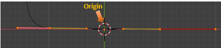
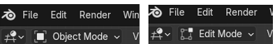
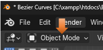
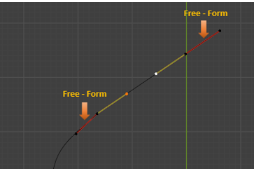

~2 Bezier-More Complex~
9/8/2025
Adding The Two Curve Extensions
To Control the Exact Location of a Mid-Point
Changing two Control Handle - Points to create a Straight Line
Adding The Two Curve Extensions
Before we can start working on more complex curves, we will need to first install two new extensions. You can go here to learn how to install these extensions.

Extruding a Curve
Ok, so let’s go back to the curve that we had been working on in the last tutorial, and start adding a few more segments to it. This will be our starting point for creating more complex curves.
Remember to start working with a section, we need to click on the point, or section that we want to work with. So, we want to start adding more segments to the top of our existing curve. And for this, we will need to click on the mid-point of that Segment. Do not click on either end point on the handle, or extrude will not work. We have to click on a mid-point.
Now click on the E key on the keyboard and pull out a few more segments. I am using Free for my handle types on the added segments. Remember Free is a handle type, and the handle types were gone over in the last tutorial.
Changing the Object’s Origin
We are going to be changing the origin of the object. Right now, it is sitting in the center at the bottom of our curves. The origin is the orange dot and not the red and white ring around it.

And this is why we needed to add those extensions that we pointed you to, at the beginning of this tutorial.
Hit the N key on your keyboard to open that menu at the right side of the viewport. If you added the Curve tool extension correctly, you should see an Edit tab. We want to open that section, below that says Sanitize.
If you find a lot of the options greyed out, like I did above. You might have to toggle the Object Workspace Mode button and Edit Mode button to bring them to life.

Select those top handles
Keep an eye on that orange dot at the bottom.
Then hit the button under Sanitize, on that menu on the right, that Says: Set Origin to Spline Start.
You will notice that the orange from that dot has disappeared. What it did was to send that origin to the mid- point on the handles that we have selected at the top. If you move that control you should see an orange dot under it.
Also, notice the orange dot is no longer at the bottom inside of the cursor.
But instead, we want this mid- point to be our start. So, select this mid- point on the first section on the floor. If you pressed the N key, you should be seeing the panel on the right of the view port. Scroll down until you find the section that is named Utilities.
When you open up the Utilities section, you might have to scroll down a bit, but inside of the Utilities section, we want to hit the Set First Points button.
Now we can come back up and again press that Set Origin to Spline Start button for it to actually work correctly.
Now our origin should actually be here. On that mid-point of that first section.
Now come out of Edit Mode, and move back into Object mode.

Hit the Item tab on the menu on the right. We need to be in the Item tab to set the Location of the points.
For the X location, we want to hit 0, and it should immediately pop that first mid-point, we assigned, and set it to the center point on the viewport.
Going Back to Edit Mode
Now go back into Edit mode.
Make sure your orange dot did indeed move to this point. If you find it did not, you will need to select this point, and hit the Set First Points, under Utility, and Set Origin to Spline Start under Sanitize again. So, make sure this point here is orange.
To Control the Exact Location of a Mid-Point
Move the point on the end of the curve, back into place by setting the Location of X, Y, and Z to be 0. This sets this exactly to that orange origin spot. In fact, it should be covering it.
Select the top 3 sections that we created.
Now hit the V key for the Handle Type menu. Then hit Automatic for the type. All of your control handles should now be yellow.
We can move that top control mid- point to be exactly on the grid line also. First make sure that the point is close to it. Then set the location settings in that panel on the right side. Remember N, controls the opening and closing of this panel. Look at the location of Y. The Y point is not set to 0, because if it was, it would place this control point flat on the ground like the other one, and that is not what we want. But you should have both the X, and the Z axis set to 0 here.
Changing two Control Handle - Points to create a Straight Line
Let’s say that instead of a curved line, in our object, we really want to straighten a segment out.
First make sure you are in the Move tool for this to work.
While in the Move tool, we can marque - select those two controls at the top of the curve.
We really don’t want to select the entire gadgets. We only want the inner two handle, end- points of both of them. Since we are in the Move tool, we are able to select just these two points.
Now with those two end points selected, hit the V hot key to bring up the handle type menu. We want to change those two points from automatic to Vector. Notice how that line is straightened out now.
But changing this these two end handles to Vector, you will notice that the handle on the other side is no longer that yellow color. It has automatically changed the other section of the control to be the Free Form handle type.

This has created a small kink in that first Free-Form handle on the left. In this case it is not very noticeable, but sometimes based on how we created our curve, it can be quite pronounced. So, we need to be able to know how to fix that. We need to select the End-point on that control.
Now, with that end-point selected, hit the V key to bring up the Handle type menu and change that handle into an Aligned handle. This will straighten that kink out and make the curve more free flowing.
Starting to Form a Shape
Now if you start moving around the control that is right below this one, the one that is still yellow, and Automatic. You can take that one and start moving it around, and being automatic it will attempt to make as smooth as a curve as it can.
Now select that entire controller. You know the entire thing is selected when all of the control points turn white.
Now with the entire control selected Hit the V key and change it to Aligned. Your handles should turn pink.
Now with it being aligned, and you start to move this controller around, you will find that it no longer gives a ding-dang about the Curve, or how it looks, it just wants to keep its handles on the controller perfectly straight up and down.
Move it to be about here.
Well, I am going to end this tutorial here for this week, next week we will start to build the shape of the object that we want to make.